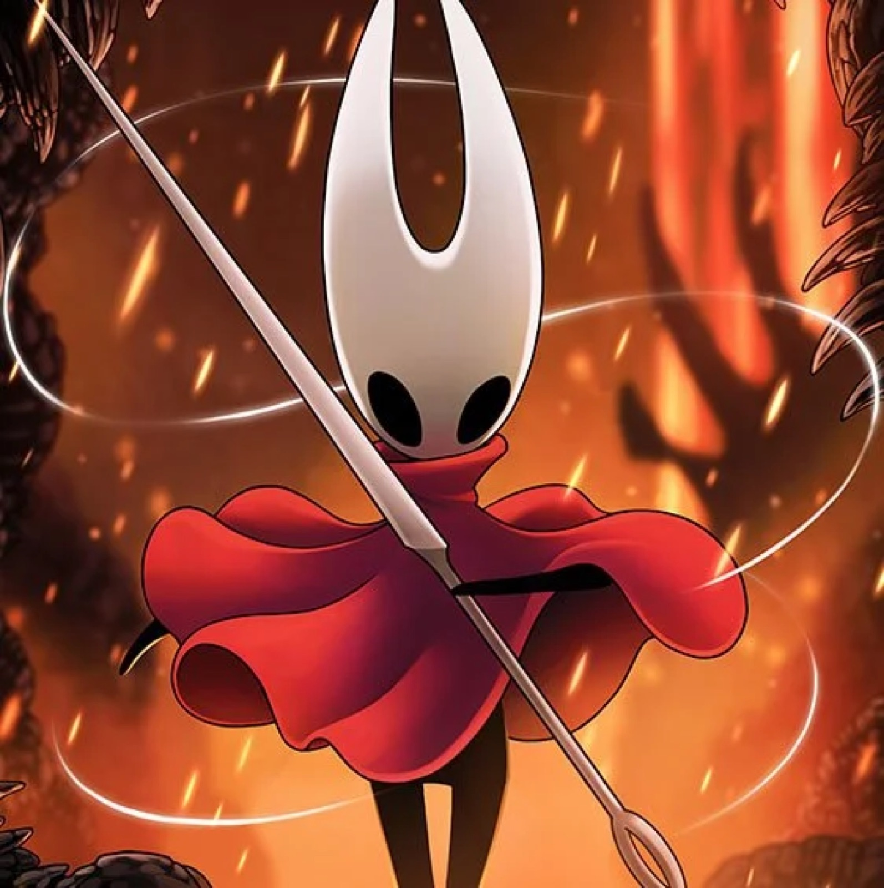

Juegos en tendencia
12 de marzo de 2026
Silksong próximamente en consolas
La actualización 5 de Silksong ya está disponible para los jugadores de PC y próximamente llegará a las consolas.
Leer más: Silksong próximamente en consolas →